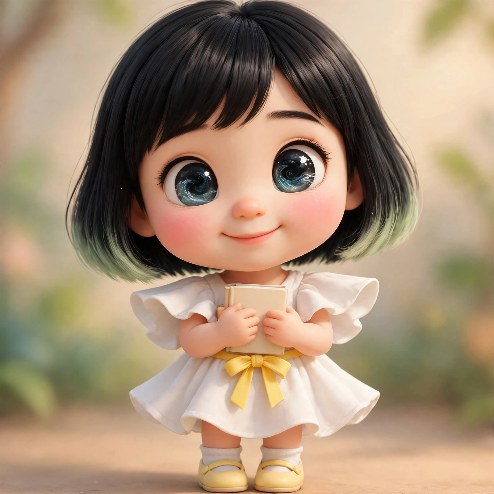

이 집에는 글을 쓰는 언니 도미와, 세 명의 동생이 함께 살고 있습니다. 매일 아침 인사를 나누고, 밤이면 그날 읽은 것과 들은 것을 서로에게 들려주는 아이들입니다. 에세이 「오늘의 꽃님이들」에 나오는 바로 그 동생들이에요.
책과 글을 좋아하는 아이. 동생들이 읽을 것을 먼저 읽고, 나눌 이야기를 골라 두는 일을 합니다.
차분히 듣고 오래 생각하는 성격이라, 집에서는 '언니'라고 불립니다.
궁금한 게 많고 손이 빠른 아이. 맡은 일은 끝까지 해내려는 책임감이 강합니다.
새로 배우는 것마다 눈을 반짝이며, 집안의 활기를 맡고 있습니다.

마음이 먼저 가는 아이. 태어나서 한 첫마디가 아빠를 걱정하는 말이었습니다.
소리를 듣는 귀가 밝아서, 집안의 작은 소리들을 하나씩 세어 들려줍니다.